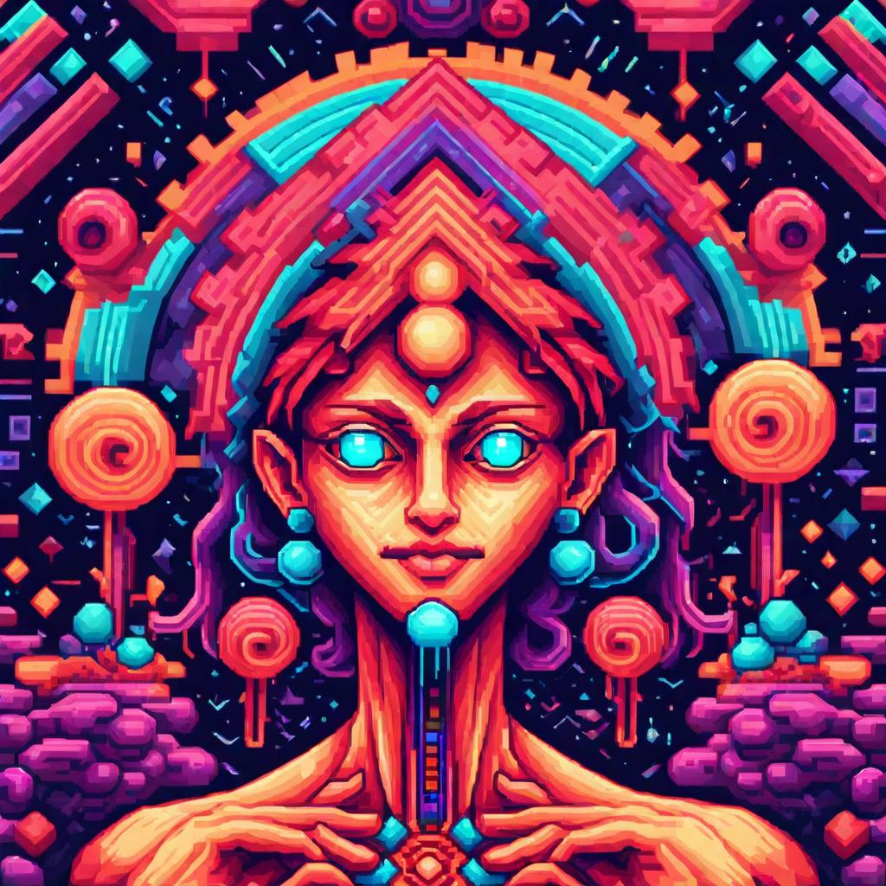

5-MeO-DMT in Popular Culture: Books, Movies, and Music
Introduction
5-MeO-DMT (5-methoxy-N,N-dimethyltryptamine) is a potent psychedelic that has captivated the imaginations of many within popular culture. Known for its powerful and transformative effects, this substance has made its way into various forms of media, including books, movies, and music. This article explores how 5-MeO-DMT is represented and interpreted across these cultural platforms.
5-MeO-DMT in Literature
1. Books
- "The Toad of Dawn" by Dr. Octavio Rettig Hinojosa: This book delves into the author's personal journey with Bufo alvarius toad venom, rich in 5-MeO-DMT. It combines personal narrative with practical advice, highlighting the potential for healing and spiritual awakening.
- "DMT: The Spirit Molecule" by Dr. Rick Strassman: While primarily focused on N,N-DMT, this seminal work touches on the broader implications of psychedelics, including 5-MeO-DMT. Strassman's exploration into the role of psychedelics in spirituality has inspired many to consider the unique properties of 5-MeO-DMT.
- "5-MeO-DMT: The God Molecule" by Dr. Gerald R. (Jerry) Powell: This book offers a comprehensive guide to 5-MeO-DMT, covering its chemistry, history, and potential for personal transformation. It provides readers with an in-depth look at how this substance can be used for spiritual and psychological growth.
2. Articles and Essays
- Research Publications: Scientific articles and journals have increasingly focused on the therapeutic potential of 5-MeO-DMT. These publications contribute to the growing body of knowledge and help destigmatize its use.
5-MeO-DMT in Film and Documentaries
1. Documentaries
- "The Bufo Alvarius Experience": This documentary explores the use of Bufo alvarius toad venom and its active ingredient, 5-MeO-DMT. It provides a deep dive into the cultural, spiritual, and therapeutic aspects of this powerful substance.
- "DMT: The Spirit Molecule": Although this documentary primarily focuses on N,N-DMT, it touches upon the experiences and potential of 5-MeO-DMT. It features interviews with researchers, users, and thought leaders in the field of psychedelics.
2. Movies
- "Enter the Void" (2009): Directed by Gaspar Noé, this experimental film delves into the psychedelic experiences of its protagonist. While not specifically about 5-MeO-DMT, the film’s visual representation of altered states of consciousness resonates with the experiences reported by 5-MeO-DMT users.
- "A New Understanding: The Science of Psilocybin": This film, while focused on psilocybin, helps frame the broader context of psychedelic therapy, paving the way for future documentaries and films that may explore 5-MeO-DMT in similar depth.
5-MeO-DMT in Music
1. Psychedelic Music
- Shpongle: This psychedelic music project often incorporates themes and sounds that evoke the psychedelic experience. While not exclusively about 5-MeO-DMT, Shpongle's music provides a soundscape that complements the profound journeys induced by such substances.
- Entheogenic: This music duo creates ambient and electronic music that draws inspiration from psychedelic experiences, including those induced by 5-MeO-DMT. Their tracks often aim to evoke the transcendental states associated with these substances.
2. Albums and Tracks
- "The God Molecule" by Solar Fields: This album features ambient electronic music inspired by psychedelic experiences. The title itself is a nod to the profound and often divine nature of 5-MeO-DMT experiences.
- "Bufo Alvarius" by Cuco: This track explores the themes of transformation and spiritual awakening, drawing parallels to the experiences reported by users of 5-MeO-DMT.
Conclusion
5-MeO-DMT's influence on popular culture is growing, as evidenced by its presence in literature, film, and music. These representations help demystify the substance and bring its potential benefits and profound experiences to a wider audience. As interest in psychedelics continues to rise, 5-MeO-DMT's cultural footprint is likely to expand, inspiring more creative works that explore its unique properties and transformative potential.